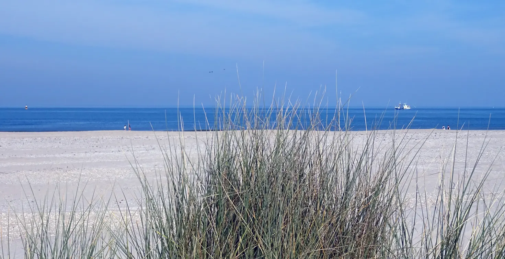
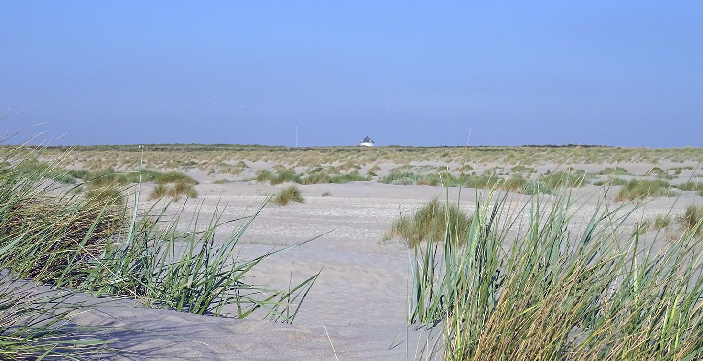
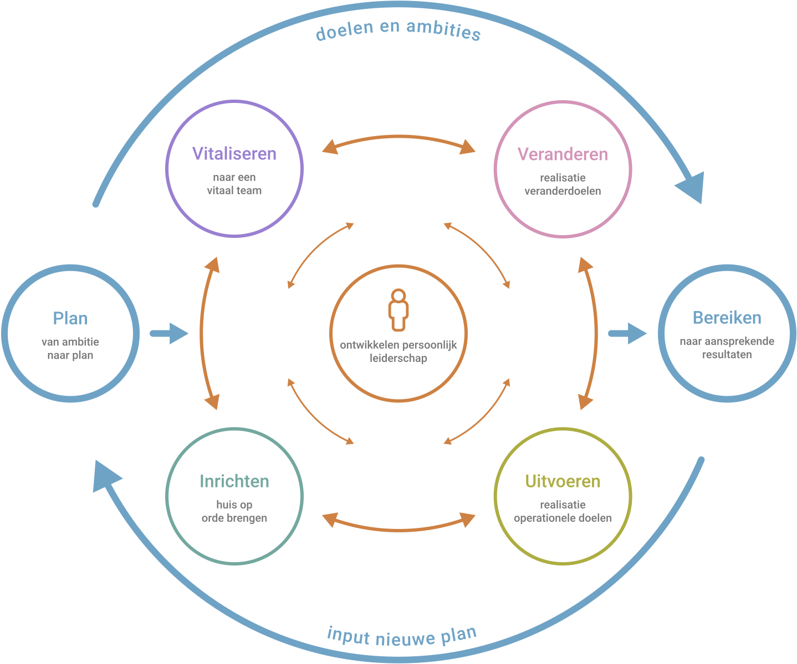
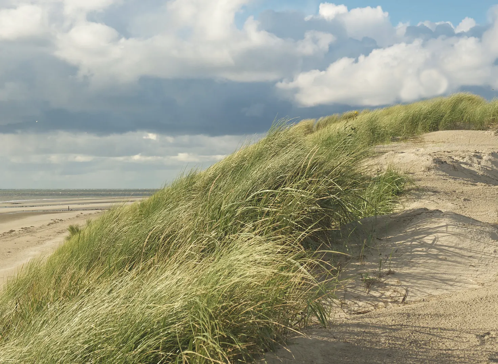
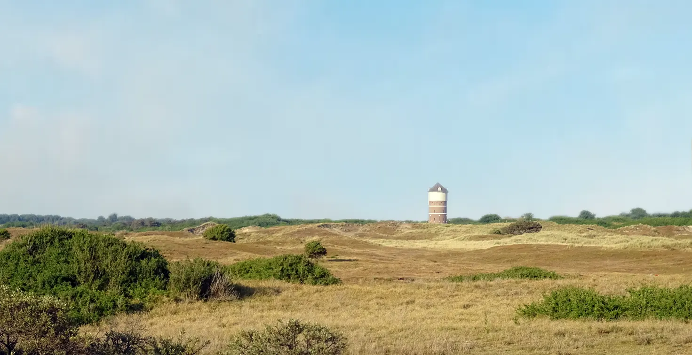

Aan de basis van een succesvolle organisatie staat hoogwaardig leiderschap. Daar is veel wetenschappelijk bewijs voor, maar het is ook een overtuiging die bij mij is ontstaan in ruim dertig jaar werken als leidinggevende, docent, coach en organisatieadviseur. Goede leiders zijn verbindend, resultaatgericht en stimuleren de ontwikkeling van persoonlijk leiderschap van de medewerkers. Naar zichzelf en naar anderen. Of zoals de Harvard hoogleraar Ronald Heifetz stelt: ‘goede leiders creëren niet meer volgers, maar meer leiders’.
Het succes van een organisatie wordt uiteindelijk bepaald door de mate van succes van de verschillende teams. Het is een optelsom. Immers het werkelijke verschil wordt door de medewerkers in de teams, niemand uitgezonderd, gemaakt. Voor veel mensen is het team waarin zij werken dan ook de organisatie, dat is prima. Ieder team is uniek in zijn context, doelen en ontwikkelfase en kan zich, onder het juiste leiderschap, ontwikkelen naar een hoger niveau. Het streven moet zijn om in de volle breedte van de organisatie zoveel mogelijk succesvolle teams te ontwikkelen.
Mijn professionele missie is het leveren van een inspirerende en waardevolle bijdrage in het ontwikkelen van het leiderschap dat leidt tot het ontstaan van meer resultaatverantwoordelijke teams. Dat zijn teams die door de tijd heen de cultuur en competenties ontwikkelen om – steeds meer onafhankelijk van het formele leiderschap en binnen de richting en kaders van de organisatie - de eigen boontjes te doppen en daarmee structureel aansprekende resultaten weten te behalen. Teams die een hoge klanttevredenheid combineren met een hoge medewerkerstevredenheid.

Ik heb de studies Personeel & Organisatie en bedrijfskunde afgerond. Vanuit mijn overtuiging dat de ware aard van organisaties uiteindelijk een gemeenschap van mensen is, ben ik mij gaan specialiseren in die aandachtsgebieden in het vak die daar naar mijn oordeel de meeste invloed op hebben: leiderschapsontwikkeling, veranderen in organisaties en human resource management.
In mijn loopbaan heb ik op veel plekken mogen werken en kunnen leren. Mensen op mijn pad getroffen die mij op het juiste moment de ruimte en vertrouwen hebben gegeven. Dat heeft mij veel gebracht in persoonlijke en professionele ontwikkeling. Op 26-jarige leeftijd ben ik gestart als leidinggevende bij een familiebedrijf in de groentezaadveredeling, vervolgens manager HRM bij Parnassia, een grote GGZ-organisatie, geworden. Daarna de stap gezet naar directeur HRM bij de sociale werkvoorziening in Den Haag en vervolgens internationaal directeur HRM bij een groot advocatenkantoor. Parallel aan deze functies heb ik altijd werkzaamheden verricht als docent op het terrein van leiderschap en veranderkunde. In zorgorganisaties, maar ook aan een MBA als docent HRM en veranderkunde. Sedert 2011 ben ik als directeur van Helios, een organisatieadviesbureau voor de zorgsector, werkzaam geweest. In deze functie heb ik de afgelopen jaren tal van organisaties en mensen mogen bijstaan als docent, coach, organisatieadviseur en interim directeur. Een fantastische tijd waarin ik met plezier en energie impactvol werk heb mogen verrichten. Ronald Bos organisatieontwikkeling is een boeiende nieuwe stap in mijn loopbaan: de kennis en ervaring die ik heb mogen opdoen doorgeven aan anderen.


Leiderschap is naar mijn overtuiging een vak dat ambachtelijk moet worden geleerd, waarbij degelijke wetenschappelijke kennis en inzichten gecombineerd met praktijkervaring zoveel mogelijk maatwerk worden vertaald naar praktische vraagstukken, uitdagingen en situaties.
De wetenschappelijke kennis over bijvoorbeeld leidinggeven aan de ontwikkeling van een succesvol team is ruimschoots beschikbaar, maar wordt, zo zie ik vaak in mijn praktijk, niet of fragmentarisch gebruikt. Met alle consequenties van dien. Het is ook gewoon lastig, omdat zoveel zaken van invloed kunnen zijn op de teamontwikkeling, maar ook omdat een geïntegreerde en samenhangende aanpak op basis van wetenschappelijke kennis tot voor kort ontbrak.
Dat is aanleiding geweest om samen met Mylogin te investeren in de ontwikkeling van de Teamfactor7, een procesversneller in leiderschap aan teamontwikkeling bestaande uit het model Teamfactor7 en een gedigitaliseerde vragenlijst Teamfactor7 en rapportage Teamfactor7. Relevante wetenschappelijke kennis gecombineerd met waardevolle inzichten en overtuigingen uit jarenlange praktijkervaring. Een belangrijke stap voorwaarts in teamontwikkeling. Voor mij een persoonlijke drijfveer om organisaties en mensen daarbinnen écht vooruit te helpen.
Meer informatie over de Teamfactor7
In 2021 is in het boek 'Blij(f) Wendbaar' het hoofdstuk 'Wendbare teams' door Ronald Bos geschreven. Hierin wordt het Teamfactor7 model beschreven en aan de hand van een casus toegelicht.
Aan de basis van een succesvol team staat hoogwaardig leiderschap. In dit essay wordt diep ingegaan op het begrip hoogwaardig leiderschap. En tevens onderzocht of het stoïcisme, een filosofische stroming, daaraan kan bijdragen.

Ronald Bos organisatieontwikkeling streeft naar het leveren van een inspirerende en waardevolle bijdrage in het ontwikkelen van leiderschap dat leidt tot het ontstaan van meer resultaatverantwoordelijke teams. Hoogwaardig leiderschap is een randvoorwaarde voor een succesvolle organisatie, maar het is ook een vak dat moet worden geleerd. Een investering die tijd kost en op alle niveaus vraagt om wederzijds commitment en partnerschap. Uiteraard van mij, maar ook van de opdrachtgever; alleen op deze wijze ben je succesvol. Met elkaar op een deskundige en toegewijde wijze werken aan de ontwikkeling van het leiderschap in de specifieke context van de organisatie en het team.
Deze vorm van organisatieontwikkeling leveren we in:
Met als rode draad de Teamfactor7.
Op basis van het model Teamfactor7 zijn twee soorten leiderschapsprogramma’s ontwikkeld. Deze bieden een stevige generieke basis en zullen zoveel mogelijk maatwerk naar de werkelijkheid, ontwikkelfase en uitdagingen van de organisatie, het team en de deelnemers worden vertaald.
Het ontwikkelen van de organisatie met behulp van de Teamfactor7 kan een belangrijk kompas zijn voor de besturingsfilosofie van een organisatie. Maar het is ook mogelijk om met behulp van de Teamfactor7 de organisatie of één of meerdere teams, veelal naar aanleiding van specifieke problematiek of uitdagingen, beter in beeld te krijgen. Op basis daarvan adviseren en/of begeleiden in de vraag hoe verder.
Op basis van het model Teamfactor7 is een traject voor leiderschapscoaching ontwikkeld, waarbij in gemiddeld 5 tot 7 gesprekken belangrijke stappen voorwaarts worden gezet in de eigen loopbaan. Het vak van leidinggevende kan bij vlagen zwaar zijn, bijvoorbeeld door grote operationele- en veranderdruk, maar bijvoorbeeld ook in een worsteling om werk en privé zo goed mogelijk te integreren. Vrijwel iedereen krijgt hier soms mee te maken, het is een kans om te ontwikkelen en te groeien. Op basis van gerichte ontwikkeldoelen worden met de coachee waardevolle en diepe gesprekken gevoerd waaraan concrete ontwikkelopdrachten zijn gekoppeld.
De Teamfactor7 is sectoronafhankelijk en kan in allerlei organisaties op een waardevolle wijze worden ingezet. Het vraagt specifieke deskundigheid en toewijding om dit op een juiste wijze te doen. Voor dat doel is de tweedaagse opleiding tot Teamfactor7-professional ontwikkeld. Daarnaast hebben we een maatwerk train-de-trainerprogramma voor grotere organisaties beschikbaar. Bij succesvol afronden van de opleiding kan aan een deelnemer een Teamfactor7-gebruikerslicentie worden verstrekt.

Voor meer informatie graag een mail naar: r.bos@ontwikkeljeorganisatie.nl